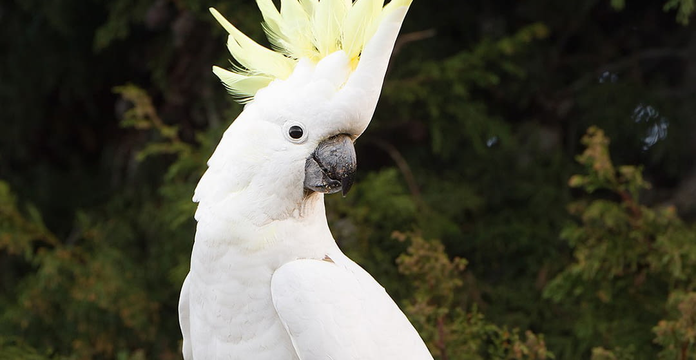

Guacamayos
Las guacamayas rojas y verdes se encuentran en el norte y centro de Sudamérica. En el norte, habitan en selvas tropicales, mientras que en el sur de su área de distribución suelen encontrarse en zonas más secas y abiertas.

Los animales exóticos son especies no nativas de una región geográfica, importadas o criadas fuera de su hábitat natural, abarcando mamíferos, aves, reptiles y anfibios.
Las guacamayas rojas y verdes se encuentran en el norte y centro de Sudamérica. En el norte, habitan en selvas tropicales, mientras que en el sur de su área de distribución suelen encontrarse en zonas más secas y abiertas.
Los periquitos pequeños son un grupo diverso que mide entre 5 y 11 pulgadas y pesa entre 23 y 32 gramos (0,8 a 1,1 onzas). Existen dos tipos principales de periquitos: el americano, también conocido como periquito estándar pequeño, y el inglés, que es de mayor tamaño.

Las cacatúas se reconocen inmediatamente por su característico penacho de plumas eréctiles. Comparten varias características con los loros, como su fuerte pico curvo y su pie zigodáctilo, es decir, con dos dedos dirigidos hacia delante y dos hacia atrás.
